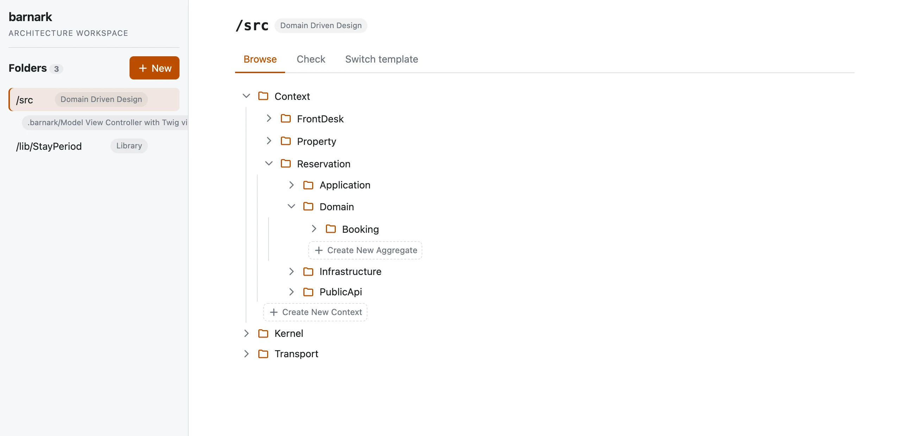

No estimates. No backlog. No “done” without proof.
BarnSuite is a better way to plan and build software. Every piece of work carries the reason it exists, nothing counts as finished until the real software proves it, and once it ships you find out whether it actually made a difference.

Most project tools reward the appearance of progress.
- Estimates nobody believesPadded guesses, turned into deadlines, turned into blame.
- A backlog you’ll never finishHundreds of “some day” tickets competing for attention with the work that matters now.
- “Done” that isn’tA card moved to the last column, with nothing to show the feature works.
- Tickets with no why“Improve login.” For whom? To what end? Nobody remembers.
- Charts that measure busynessVelocity and burndown tell you work happened, not that it helped.
- Work cut into layersOne person on the database, one on the screen, nobody holding the whole thing.
BarnSuite doesn’t manage these problems. It leaves no room for them.
Done means proven.
Nothing turns green because someone dragged a card. Each story is pinned down by concrete examples, and an example only goes green when it passes against the real software.
If it breaks later, it goes back to red on its own. A board that can’t be gamed is a board you can trust.
How proof works
Every piece of work knows why it exists.
Work is written as a need a real person has: who they are, what they want to do and what they get from it. Anyone can read it, from a stakeholder to the newest developer.
Change your mind and the change is recorded beside the original. The reasoning never rots, and history is never quietly rewritten.
How stories stay trueA guest wants to cancel their booking, so they are not held to a stay they will not take.
- First releaseCancelling frees the room. Cancelling twice is refused.
- Third releaseChanged: cancelling twice does no harm. The original is kept beside it.
Everyone speaks the business’s language.
Every person, thing and action your work mentions is given a meaning in plain words, once, and kept in a glossary everyone shares. A word means the same thing to a stakeholder, a developer and the code.
Nobody forgets what a term meant or argues about it months later, and someone new can learn the business just by reading it.
How the shared language works- guestwho
- choosing and securing somewhere to stay
- bookingthing
- a guest’s hold on a room for a run of nights
- is confirmed: holds the room for the guest on these nights
- has been cancelled: no longer holds the room
Written once, then used word for word in every story, example and test.
No backlog. Just the next slice.
There is what has been delivered and proven, and the one slice being built now. Nothing else. No “some day” pile to groom, and no estimates to defend.
A slice is finished when it works from end to end, not when a date arrives. Then you start the next one, knowing more than you did.
How slices work- Nothing else. That’s the point.
- returning guests
- tightening bookings
- changing plans
- first bookings
Then ask: did it matter?
Shipping isn’t the finish line. After each release, every piece of work is checked against the reason it was built, in the words of the people it was for.
“It works, but it didn’t help” is a perfectly good answer. Making it easy to say is how teams stop building things nobody needed.
How value is checked…so they have somewhere to stay. Did they?
“I booked without phoning the front desk.”
Sam, a guest
A codebase that can’t quietly rot.
Choose a shape for your code, from a catalogue of styles or your own, and BarnSuite holds the code to it. Drift shows up the moment it happens, and new parts are created in the right place with one click.
When it’s time to change style, the move is guided and previewed rather than a rewrite.
Meet Barnark
If the software disappeared, the value shouldn’t.
Imagine every line of code vanished overnight. What BarnSuite holds should be enough for a different team, with different technology, to rebuild the product: the same things, for the same people, for the same reasons. Every story is written to pass that test.
Empirical, not predictive.
The usual question is “when will it be finished?” BarnSuite asks better ones: what did we build, does it work, and did it matter?
The usual way
- Estimates, points and deadlines
- An ever-growing backlog
- “Done” when someone says so
- One-line tickets that lose their meaning
- Words that mean different things to different people
- Work split by layer and handed off
- Shipped, so assumed valuable
The BarnSuite way
- Slices of real progress
- What’s proven, plus the one slice being built
- Green only when the software proves it
- Stories that keep their who, what and why
- One shared glossary: one word, one meaning
- Whole slices, proven end to end
- A real answer to “did it matter?”
Three tools, one way of working.
Use one, or all three. Each stands on its own.
Barnspec
Map what people need, build it in slices, and prove every piece works.
Explore Barnspec Shape the softwareBarnark
Give your codebase a shape, keep it there, and change it without a rewrite.
Explore Barnark Organise the conceptsBarncept
Capture how you understand a domain, independent of how it gets built.
Explore BarnceptDiscipline that feels like simplicity.
BarnSuite asks more of a team in one way, honesty, and much less in every other. Start with the story map and see what your work looks like when it has to prove itself.